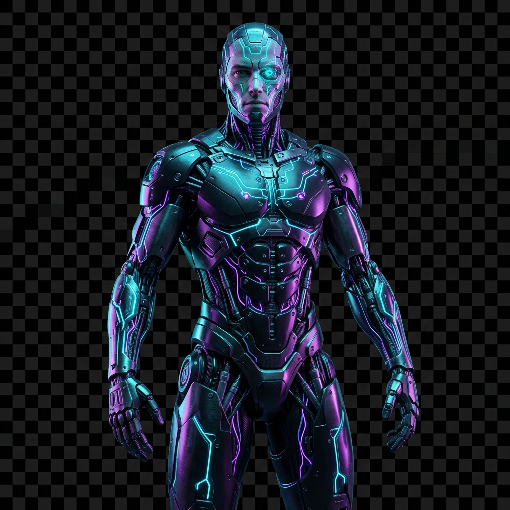

Explore the next generation of human-machine evolution. Seamlessly fuse your consciousness with state-of-the-art cybernetic augmentations, neural AI layers, and quantum architectures. Redefine the limits of mortality.

Humanity has entered a new era where artificial intelligence, robotics, and cybernetic enhancements redefine the limits of human potential.
We are no longer bound by organic constraints. Through biological transhumanism, we enhance our sensory perception, physical strength, and mental computation speeds. By bridging cellular matter and quantum matrices, Cyborg 2077 offers a flawless convergence of soul and silicon.
Connect your mind directly with artificial intelligence systems, bypassing organic sensory limits for instantaneous thoughts and downloads.
Enhanced visual capabilities powered by machine learning, supporting tactical HUD overlays, thermal scanning, and digital zooming.
Upgrade physical performance beyond natural limits using high-density synthetic muscles and automated metabolic regulating nodes.
Experience next-generation computational intelligence. Simulate complex neural scenarios and solve algorithms at atomic scale.
Global quantum systems supersede human computational skills. Basic smart companion automation begins managing industrial networks.
The first successful biological computer connection is established. Humans begin accessing dynamic clouds with simple thought prompts.
Sleek bionic prosthetic upgrades surpass biological efficiency. Cybernetic optics and muscle cores become standard medical integration.
Biological nodes integrate completely with quantum clouds. Organic bodies are fully upgradeable, entering the transhumanist singularity.